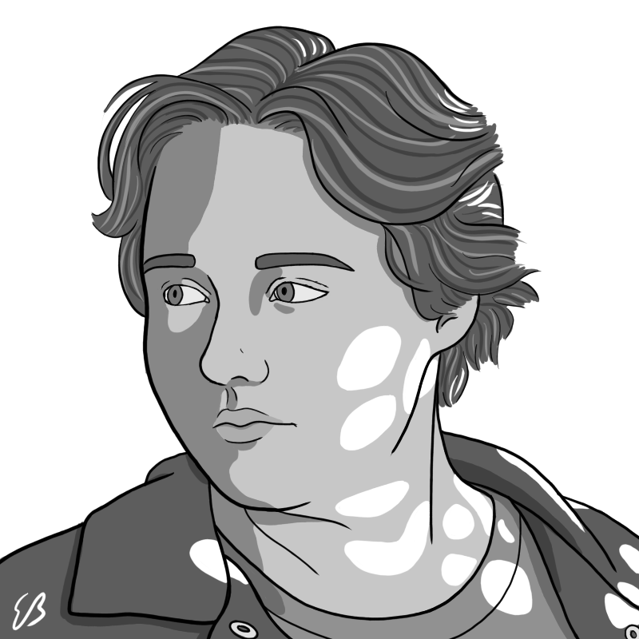
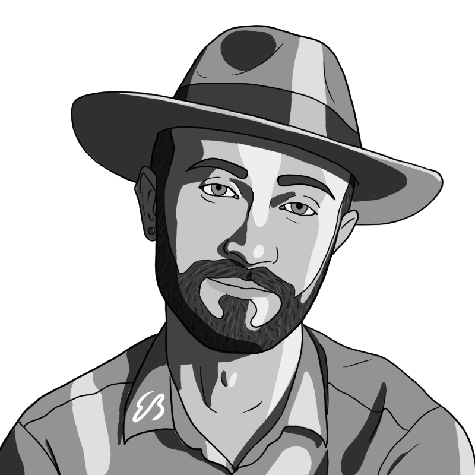

Jules, formerly known as Josh, is a Lover, not a Thinker. She likes long walks on the beach and the color Periwinkle. Her derelict brain is from whence the oddity of REDROCK Sprang. Jules enjoys haiku, playing on her mandolin, improv comedy, and the Rule of Three.
In addition to her other roles, Jules plays Korimand Kelter on Emergence
Chenoa is our amazingly talented Character Artist and Social Media manager. She has been playing D&D and TTRPG's for over Eight years now! Aspiring to "get dat degree" and make our listeners cry again.
In addition to her responsibilities, she plays Emori on Emergence, Elijah in REDROCK Season Four and played Esmerelda on Season Three of REDROCK.

"I do sound."
-Jacob Croyle, Technical Producer
Born in the fifteen hundreds in the town of Stratford-Upon-Avon, Alicia began her writing career with the autobiography “The Lion, The Witch, and the Wardrobe”, in which she tells her time as a lion named Aslan. After her adventures there, she returned to her homeland of Skellige and soon after was gifted Excalibur by the Lady of the Lake, who named her the rightful ruler of England. She lived in a small cottage on Asgard until she died in Three Hundred AD.
She plays Professor Philip Saphirus and The Initiate on REDROCK.

Yeehaw yeehaw artist yeehaw yeehaw nerd bro yeehaw yeehaw. Evan draws most of our Podcast Thumbnails, as well as these lovely portraits you see all over this page.
Evan played Tiffany on REDROCK and Ales & Beck on Emergence.
Jaden "Jadonis" Burrell is the son of a disgraced Door Heiress and a Hipster. His hobbies include touring the facilities and picking up slack. He uses a machete to cut through red tape. He's trading his MG for a white Chrysler LeBaron.
Jaden played Viceroy, Four Fists Punish the Arrogant and Duke Maccoy on REDROCK. He also played Yorrik on Emergence.